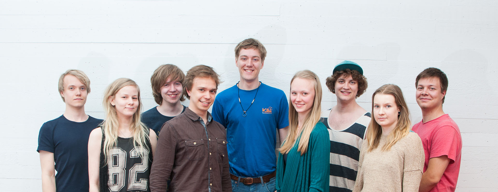

JOUKKUE
Olemme kaikkien aikojen ensimmäinen suomalainen iGEM-joukkue ja olemme mukana tekemässä uraauurtavaa työtä maamme huippuosaamisen edistämiseksi. Yhdeksänhenkisen tiimimme jäsenet ovat alle 24-vuotiaita Helsingin yliopiston ja Aalto-yliopiston opiskelijoita. Kokonaisuudessaan olemme poikkitieteellinen, monialainen ryhmä opiskelijoita, joita kaikkia kiinnostaa synteettinen biologia ja sen tarjoamat mahdollisuudet. Joukkueessamme on erityisosaamista mm. bioinformatiikasta, molekyylibiotieteistä, matematiikasta, fysiikasta, tietojenkäsittelytieteistä, genetiikasta, systeemitieteistä, elintarviketekniikasta, kemiasta, tuotekehityksestä, bioprosessitekniikasta, bioniikasta, tuotantotaloudesta, biotekniikasta sekä sähkötekniikasta.